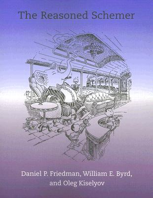
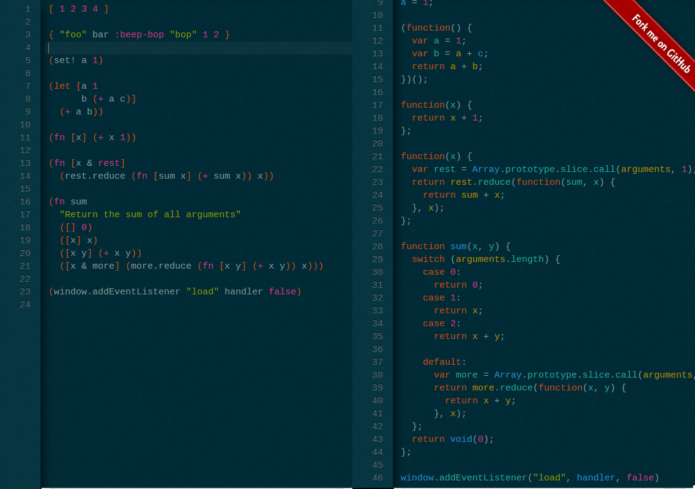
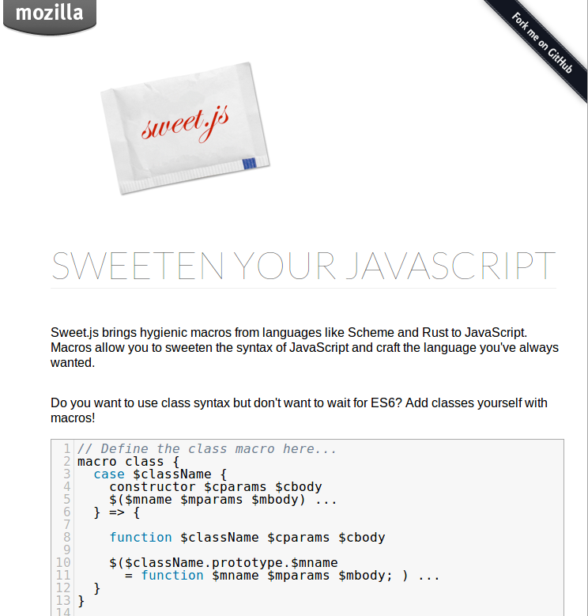

layout: true class: center,middle --- # Use Clojurescript (or don't)  ### @thattommyhall Theatre fan, occasional mountaineer, part time runner, thoroughly nice chap, available in fine bookstores everywhere. [thattommyhall.com](http://thattommyhall.com) --- # New Job! [futurelearn.com](http://futurelearn.com) --- # 1958 ## "John McCarthy and Paul Graham invent LISP. Due to high costs caused by a post-war depletion of the strategic parentheses reserve LISP never becomes popular... Fortunately for computer science the supply of curly braces and angle brackets remains high." --- # Eich On JS ## "Bet on it" ## "The part that is good is not original, and the part that is original is not good" ## "I was recruited to Netscape with the promise of “doing Scheme” in the browser... previously, at SGI, Nick Thompson had turned me on to SICP" --- class: top # Javascript == Scheme --- class: center, middle # Clojure --- class: center, middle # Clojurescript --- # Minecraft in Clojurescript <canvas id="game" width="424" height="240"></canvas> <button onclick="startMC()">Start</button> <button onclick="stopMC()">Stop</button> Thanks to [David Nolen](http://swannodette.github.io/2013/06/10/porting-notchs-minecraft-demo-to-clojurescript/)! Link to a [bare version](mc.html) (should be smoother than David's as it's using requestAnimationFrame) --- class: top # core.logic  --- # core.async ## Go in a macro! [10'000 processes ](http://swannodette.github.io/2013/08/02/100000-processes/) [100'000 Dom Updates](http://swannodette.github.io/2013/08/02/100000-dom-updates/) --- # Coffeescript ## "Writes the Javascript you would have written" # Clojurescript ## "Writes the javascript you would have written, if you were mental and tenacious" --- # Wisp  --- # Want macros?  --- [Next week - Logstash in Node and Cljs](http://skillsmatter.com/event-details/home/why-would-a-system-administrator-care-about-clojurescript) --- class: center # Enlil > ### at thy name, which created the world, the heavens were hushed of themselves. --- class: center,middle # Slides Powered By [Remark](http://gnab.github.io/remark/#1) --- class: center,middle # Qs?